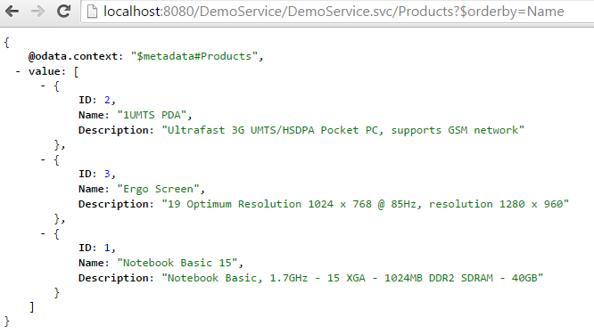

How to build an OData Service with Olingo V4¶
Part 5.3: System Query Options: $orderby¶
Introduction¶
In the present tutorial, we will continue implementing OData system query options, this time focusing on $orderby
Note:
The final source code can be found in the project git repository.
A detailed description how to checkout the tutorials can be found here.
This tutorial can be found in subdirectory \samples\tutorials\p7_queryoptions-o
Disclaimer: Again, in the present tutorial, we will focus only on the relevant implementation, in order to keep the code small and simple. The sample code as it is, shouldn’t be reused for advanced scenarios.
Table of Contents
- Prerequisites
- Preparation
- Implementation
- Implement
$orderby
- Implement
- Run the implemented service
- Summary
- Links
__
1. Prerequisites¶
Same prerequisites as in Tutorial Part 1: Read Entity Collection and Tutorial Part 2: Read Entity as well as basic knowledge about the concepts presented in both tutorials.
Furthermore, Tutorial Part 5.1 should have been read.
2. Preparation¶
Follow Tutorial Part 1: Read Entity Collection and Tutorial Part 2: Read Entity or as shortcut import Part 2: Read Entity, Read Property into your Eclipse workspace.
Afterwards do a Deploy and run: it should be working.
Implementation¶
The system query options we’re focusing on are applied to the entity collection only, therefore our implementation for all query options is done in the class myservice.mynamespace.service.DemoEntityCollectionProcessor
The general sequence is again:
- Analyze the URI
- Fetch data from backend
- Apply the system query option
- Serialize
- Configure the response
3.1. Implement $orderby¶
Background
When requesting a list of entities from a service, it is up to the service implementation to decide in which order they are presented. This can depend on the backend data source, anyways, it is undefined. But the consumer of an OData service might want to be able to specify the order, according to his needs.
For example, a usual case would be that the list of entities is sorted as per default by its ID number, but for a user, the ID is not relevant and he would prefer a sorting e.g. by the name
OData supports this requirement with the system query option $orderby
It is specified as follows:
$orderby=<propertyName>
The order can be ascending or descending:
$orderby=<propertyName> asc
$orderby=<propertyName> desc
If not specified, the default is ascending.
See here for more details: OData Version 4.0 Part 1: Protocol Plus Errata 02
Note:
As of the OData specification, the $orderby system query option can be applied to multiple properties.
In that case, the value is specified as comma-separated list.
Example:
<http://localhost:8080/DemoService/DemoService.svc/Products?$orderby=Name asc, Description desc>
In this example, all the products are sorted by their name. Moreover, all products with the same name are sorted by their description in descending order. Another example could be that I want to display all my customers, they should be sorted by their country. Additionally, within each country, they should be sorted by their name
In order to support such sorting, the OData service implementation has to make use of the ExpressionVisitor concept. We haven’t used it in the present tutorial, because the ExpressionVisitor will be explained in the $filter section
Example First, just to remember how the full payload looks like, the “normal” query of the product: http://localhost:8080/DemoService/DemoService.svc/Products

The following request specifies the sorting by the name. The order is ascending, if not specified elsewise.
http://localhost:8080/DemoService/DemoService.svc/Products?$orderby=Name

Implementation
The following section describes the simple approach to enable the EntityCollectionProcessor class and the readEntityCollection() method for $orderby.
Just like in the previous tutorials, the data is first fetched from the backend, then the system query option is applied.
EntityCollection entityCollection = storage.readEntitySetData(edmEntitySet);
List<Entity> entityList = entityCollection.getEntities();
We will proceed according to these 4 steps:
- Get the query option from the UriInfo. If null is returned then nothing has to be done.
- Get the value from the query option
- Analyze the value
- Modify the EntityCollection
1. Get the OrderByOption from the UriInfo:
OrderByOption orderByOption = uriInfo.getOrderByOption();
if (orderByOption != null) {
2. Get the value of the OrderByOption:
List<OrderByItem> orderItemList = orderByOption.getOrders();
final OrderByItem orderByItem = orderItemList.get(0);
The instance of an OrderByOption can be asked for the list of its OrderByItems.
Why a list?
Because the $orderby expression can be composed with multiple properties
For example, for the following URL, we get 2 OrderByItems:
http://localhost:8080/DemoService/DemoService.svc/Products?$orderby=Name asc, Description desc
In our example, we support only one property, therefore we directly access the first OrderByItem in the list.
3. Analyze the value
What do we want to do? From the backend we got a list of entities that are products. We want to apply a sorter to that list and we want to sort by the property name that is given in the URI. In our example, the property name that is provided in the URI can be “Name”, “Description” or “ID” So we have to retrieve the property name from the URI.
Expression expression = orderByItem.getExpression();
if(expression instanceof Member){
UriInfoResource resourcePath = ((Member)expression).getResourcePath();
UriResource uriResource = resourcePath.getUriResourceParts().get(0);
if (uriResource instanceof UriResourcePrimitiveProperty) {
EdmProperty edmProperty = ((UriResourcePrimitiveProperty)uriResource).getProperty();
final String sortPropertyName = edmProperty.getName();
4. Modify the EntityCollection
The remaining work is to do the sorting. We have a list of entities that has to be sorted, therefore we create a java.util.Comparator for Entity:
Collections.sort(entityList, new Comparator<Entity>() {
In the compare method, we extract the required property from the entity. The required property is the one that we retrieved from the URI. In our sample, the properties can be of type String or Integer, therefore we have to distinguish these 2 cases. The actual work of comparing can then be delegated to the String and Integer classes.
if(sortPropertyName.equals("ID")){
Integer integer1 = (Integer) entity1.getProperty(sortPropertyName).getValue();
Integer integer2 = (Integer) entity2.getProperty(sortPropertyName).getValue();
compareResult = integer1.compareTo(integer2);
}else{
String propertyValue1 = (String) entity1.getProperty(sortPropertyName).getValue();
String propertyValue2 = (String) entity2.getProperty(sortPropertyName).getValue();
compareResult = propertyValue1.compareTo(propertyValue2);
}
After the sorting is done, we still have to consider, if the required order is ascending or descending. So we have to retrieve that information from the OrderByItem and then we can simply reverse the current order accordingly:
if(orderByItem.isDescending()){
return - compareResult; // just convert the result to negative value to change the order
}
The full implementation of the readEntityCollection() method:
public void readEntityCollection(ODataRequest request, ODataResponse response, UriInfo uriInfo, ContentType responseFormat)
throws ODataApplicationException, SerializerException {
// 1st retrieve the requested EntitySet from the uriInfo
List<UriResource> resourcePaths = uriInfo.getUriResourceParts();
UriResourceEntitySet uriResourceEntitySet = (UriResourceEntitySet) resourcePaths.get(0);
EdmEntitySet edmEntitySet = uriResourceEntitySet.getEntitySet();
// 2nd: fetch the data from backend
EntityCollection entityCollection = storage.readEntitySetData(edmEntitySet);
List<Entity> entityList = entityCollection.getEntities();
// 3rd apply $orderby
OrderByOption orderByOption = uriInfo.getOrderByOption();
if (orderByOption != null) {
List<OrderByItem> orderItemList = orderByOption.getOrders();
final OrderByItem orderByItem = orderItemList.get(0); // we support only one
Expression expression = orderByItem.getExpression();
if(expression instanceof Member){
UriInfoResource resourcePath = ((Member)expression).getResourcePath();
UriResource uriResource = resourcePath.getUriResourceParts().get(0);
if (uriResource instanceof UriResourcePrimitiveProperty) {
EdmProperty edmProperty = ((UriResourcePrimitiveProperty)uriResource).getProperty();
final String sortPropertyName = edmProperty.getName();
// do the sorting for the list of entities
Collections.sort(entityList, new Comparator<Entity>() {
// delegate the sorting to native sorter of Integer and String
public int compare(Entity entity1, Entity entity2) {
int compareResult = 0;
if(sortPropertyName.equals("ID")){
Integer integer1 = (Integer) entity1.getProperty(sortPropertyName).getValue();
Integer integer2 = (Integer) entity2.getProperty(sortPropertyName).getValue();
compareResult = integer1.compareTo(integer2);
}else{
String propertyValue1 = (String) entity1.getProperty(sortPropertyName).getValue();
String propertyValue2 = (String) entity2.getProperty(sortPropertyName).getValue();
compareResult = propertyValue1.compareTo(propertyValue2);
}
// if 'desc' is specified in the URI, change the order
if(orderByItem.isDescending()){
return - compareResult; // just reverse order
}
return compareResult;
}
});
}
}
}
// 4th: create a serializer based on the requested format (json)
ODataSerializer serializer = odata.createSerializer(responseFormat);
// and serialize the content: transform from the EntitySet object to InputStream
EdmEntityType edmEntityType = edmEntitySet.getEntityType();
ContextURL contextUrl = ContextURL.with().entitySet(edmEntitySet).build();
final String id = request.getRawBaseUri() + "/" + edmEntitySet.getName();
EntityCollectionSerializerOptions opts = EntityCollectionSerializerOptions.with().contextURL(contextUrl).id(id).build();
SerializerResult serializerResult = serializer.entityCollection(serviceMetadata, edmEntityType, entityCollection, opts);
InputStream serializedContent = serializerResult.getContent();
// 5th: configure the response object: set the body, headers and status code
response.setContent(serializedContent);
response.setStatusCode(HttpStatusCode.OK.getStatusCode());
response.setHeader(HttpHeader.CONTENT_TYPE, responseFormat.toContentTypeString());
}
4. Run the implemented service
After building and deploying your service to your server, you can try the following URLs:
- The “normal” payload without query option http://localhost:8080/DemoService/DemoService.svc/Products
- Sort by Name ascending http://localhost:8080/DemoService/DemoService.svc/Products?$orderby=Name
- Sort by Name descending [http://localhost:8080/DemoService/DemoService.svc/Products?$orderby=Name desc](http://localhost:8080/DemoService/DemoService.svc/Products?$orderby=Name desc)
- Sort by Description ascending http://localhost:8080/DemoService/DemoService.svc/Products?$orderby=Description
- Sort by Description descending [http://localhost:8080/DemoService/DemoService.svc/Products?$orderby=Description desc](http://localhost:8080/DemoService/DemoService.svc/Products?$orderby=Description desc)
5. Summary¶
In this tutorial we have learned how to implement a simple $orderby.
We have decided to not go for the advanced way of implementing $orderby, which would have been using an ExpressionVisitor, because that is treated in the $filter implementation.
6. Links¶
Tutorials¶
- Tutorial OData V4 service part 1: Read Entity Collection
- Tutorial OData V4 service part 2: Read Entity, Read Property
- Tutorial OData V4 service part 3: Write (Create, Update, Delete Entity)
- Tutorial OData V4 service, part 4: Navigation
- Tutorial OData V4 service, part 5.1: System Query Options $top, $skip, $count (this page)
- Tutorial OData V4 service, part 5.2: System Query Options $select, $expand
- Tutorial OData V4 service, part 5.3: System Query Options $orderby (this page)
- Tutorial OData V4 service, part 5.4: System Query Options $filter
- Tutorial ODATA V4 service, part 6: Action and Function Imports
- Tutorial ODATA V4 service, part 7: Media Entities
- Tutorial OData V4 service, part 8: Batch Request support
- Tutorial OData V4 service, part 9: Handling "Deep Insert" requests
Code and Repository¶
- Git Repository
- Guide - To fetch the tutorial sources
- Demo Service source code as zip file (contains all tutorials)
Further reading¶
Copyright © 2013-2022, The Apache Software Foundation
Apache Olingo, Olingo, Apache, the Apache feather, and
the Apache Olingo project logo are trademarks of the Apache Software
Foundation.